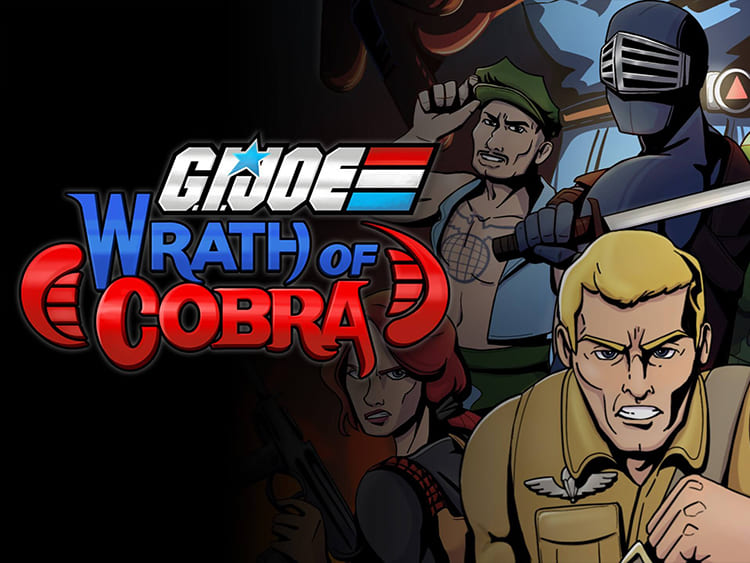

Adding multiplayer to a game that already worked offline
The existing game already contained its gameplay systems, but multiplayer had not been implemented when I joined the engagement. The task was therefore not to build a new game around networking; it was to understand an existing action-game codebase and adapt its gameplay systems to a coherent multiplayer model without unnecessarily rewriting the original product.
My responsibility
I led the two-developer multiplayer effort, designed the networking approach, implemented the main Fusion systems, mentored the other developer, and worked directly with Maple Powered Games engineers when existing gameplay behavior needed clarification or coordination.
What I owned
- Networking approach: authority, input, replicated state
- Main Photon Fusion systems implementation
- Network-aware spawning, host migration, and failure handling
- Adapting existing systems for multiplayer
- Mentoring the second multiplayer developer
- Coordination with the original gameplay engineers
Pre-existing (not mine)
- Combat, AI, animations, and gameplay systems were existing game code.
- Fusion’s prediction and tick model is provided by Photon Fusion; my work was applying it to this game.
Client-host topology with Photon Fusion
Client-host topology using Photon Fusion. Players held Input Authority for their player input while the host held State Authority over authoritative networked state and simulation.
- Local input
- PlayerNetworkInputinput packed for the network
- Fusion tick / GetInputtick-based input consumption
- Host State Authorityauthoritative simulation
- Gameplay / AI statenetworked properties
- Replicated proxies / renderingon every client
Implementation themes
NetworkRunner/session setup with host and client modes- Input provisioning and tick-based input consumption
- State/input authority checks
NetworkBehaviour,NetworkObject, and networked properties- Player state replication
- Network-aware spawn/despawn and network object pooling
- Networked AI conversion
- Host migration
- Disconnect/shutdown handling and online-to-offline fallback
Adapting existing gameplay to authority-based networking
Existing gameplay code assumed local execution. Multiplayer required deciding which actions could remain responsive on the player's machine and which state had to be authoritative on the host.
Player input was captured locally, packed into Fusion network input, and consumed in the network simulation. The host/state-authoritative side controlled important gameplay state such as health and other replicated player values, while players retained responsive input through Fusion's predicted, tick-based model.
Converting AI and enemies without redesigning the game
Enemy and boss behavior already existed. The multiplayer layer had to preserve that behavior while preventing every client from independently simulating AI and diverging.
AI simulation was gated so that the authoritative instance drove behavior/state while clients received the synchronized result. Enemy health/state and network-aware spawning/despawning were adapted around this model.
In short: I converted existing enemy and boss gameplay systems for host-authoritative multiplayer simulation. The AI design itself was part of the original game.
Session failure without immediately ending the player's game
One of the more distinctive requirements was handling loss of the multiplayer session without forcing the player to abandon the current run.
The multiplayer module contains explicit shutdown/error handling that snapshots local player state, recreates an offline player, restores relevant state, and recreates enemies locally so play can continue outside the network session.
- Session shutdown / error
- Snapshot local player state
- Recreate offline player
- Restore relevant state
- Recreate enemies locally
- Play continues offline
This required thinking about the boundary between network-owned state and the underlying offline gameplay model rather than treating disconnect as a simple error screen.
Host migration
The module implements Fusion host migration rather than relying only on a simple disconnect flow. It restarts the runner using a HostMigrationToken, iterates resume snapshot objects, recreates network objects, copies state, restores scene-object/networked behavior state, rebuilds player mappings, and reassigns input authority where needed.
- Restart runnerwith HostMigrationToken
- Iterate resume snapshot objects
- Recreate network objects & copy state
- Restore scene-object / networked behavior state
- Rebuild player mappings
- Reassign input authoritywhere needed
This is one of the strongest pieces of direct networking evidence in the project because it deals with reconstructing a running session rather than only synchronizing ordinary gameplay.
Additional implementation highlights
- Networked player health/lives/score/combo/stamina and related state
- Projectile/network spawning paths
- Pickups/equipment/interactions adapted to networking
- Selected RPC-driven events/effects
- Custom
INetworkObjectPoolintegration - Animation/state synchronization work
- Host-side physics/gameplay interactions against AI
Scope note: latency
I designed and tested latency-aware multiplayer behavior using Photon Fusion's network simulation model. Prediction and the tick model come from Fusion itself; this project did not involve a custom lag-compensation or prediction/reconciliation system.
Confidentiality
The source code belongs to the client. This case study describes the approach conceptually and does not reproduce proprietary code.
Outcome
Delivered a substantial multiplayer adaptation layer over an existing action game within a focused engagement, while coordinating with the original gameplay engineers and mentoring another developer on the multiplayer team.
A different kind of ownership
This project represents a different kind of ownership from a greenfield multiplayer game. The challenge was understanding a mature gameplay codebase quickly, identifying where networking boundaries belonged, and integrating Fusion without replacing systems that already worked offline.
Media & external evidence

Play video: G.I. Joe: Wrath of Cobra trailer (product media)